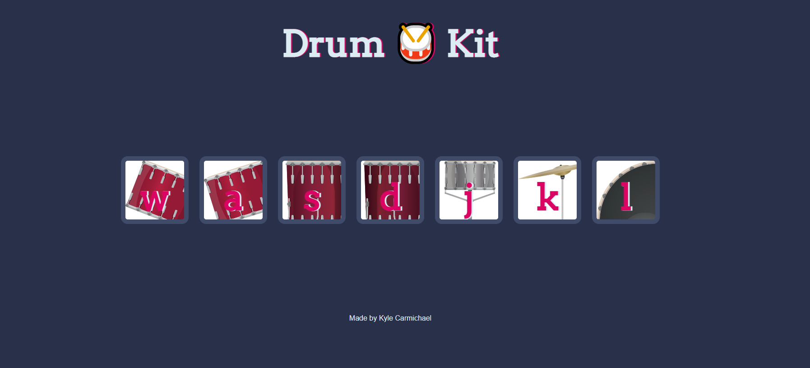
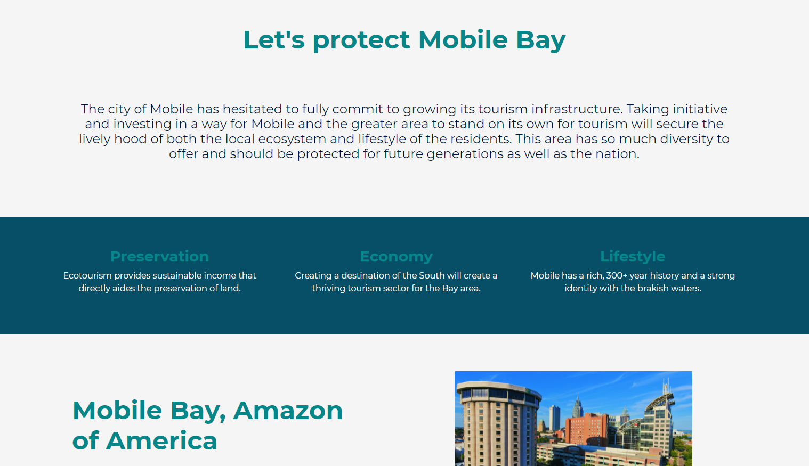

I am a Programmer
Hello there! I'm Kyle. I am someone who is committed to continuous growth for personal skills, academic endeavors, and professional aspirations. I am passionate about creating accessible, responsive, semantic, and beautiful code. I am learning to be an amazing front end developer.
My Projects
Drumkit
This project utilizes event listeners for keypresses and clicks to play drum audio.
Mobile Ecotourism
A CTA style poster meant to encourage the preservation of the local environment while providing opportunies for economic growth.
Project 3
Short description of project 3
Project 4
Short description of project 4
Abilities and Technologies
With a current focus on Front End Technologies, I am passionate about building proficiencies in a wide range of skills.
- HTML5
- CSS3
- JavaScript
- Bootstrap
- Sass
- jQuery
- Adobe CC
Education
Bachelor of Science, Graphic Information Technology 3.96 GPA
Taken at Arizona State University, Ira A. Fulton Schools of Engineering. Enrolled in the first ever Tech Boot Camp: Introduction to Responsive Web Design with HTML and CSS, Web Development with JavaScript and APIs.
Get in Touch
Feel free to reach out to me via email or LinkedIn :)